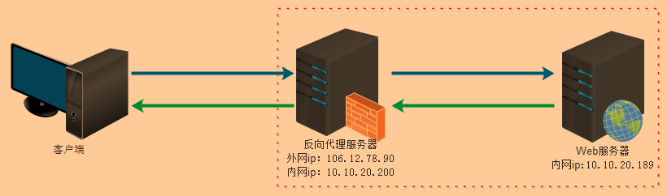
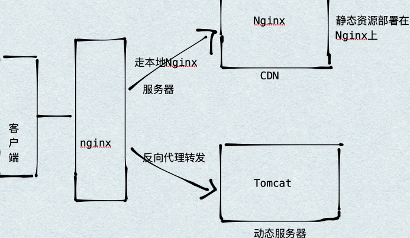
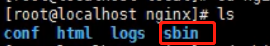
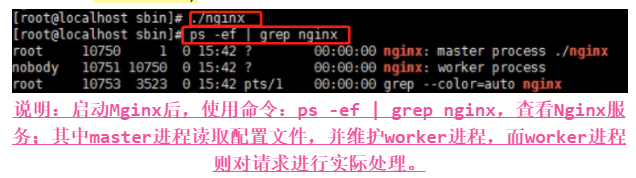
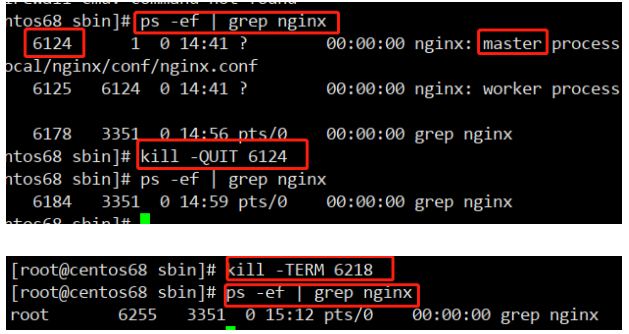
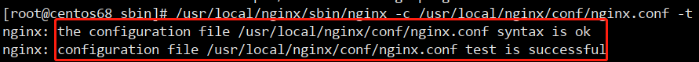
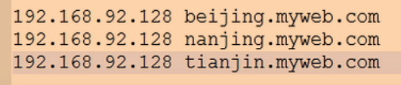

Nginx–学习笔记(包含Nginx视频)
Lesson1 Nginx概述
NO1.1 Nginx简介
Web服务器是用来运行、发布Web应用的容器，就是说只有将开发的Web项目放到该容器中，才能使网络中的所有用户通过浏览器进行访问。
- 常见的Web服务器主要有：Apache、Tomcat、IIS、Nginx等等；其中Nginx是一个高性能的HTTP和反向代理服务器，基于REST架构风格，以统一资源描述符URI或者统一资源定位符URL作为沟通依据，通过HTTP协议提供各种网络服务。如，淘宝、新浪、网易、迅雷等都在使用Nginx作为Web服务器。
- Nginx服务器的特点：
- 热部署：Nginx在修改配置文件之后，不需要重启、重载操作；
- 高并发连接：即相同配置的服务器，Nginx比Apache能接受的连接要多很多；
- 低内存消耗：即相同配置的服务器，Nginx比Apache消耗更低的内存；
- 响应请求速度快：处理静态文件，响应速度很快；
NO1.2 Nginx的正向代理和反向代理
代理其实就是一个中介，A和B本来可以直接连接，中间插入一个C，C就是中介。
正向代理：正向代理类似一个跳板机，需要帮忙代理的主体是客户端，帮它去访问外部资源。如，我们国内访问谷歌，直接访问访问不到，我们可以通过一个正向代理服务器，将请求发送到代理服务器上，然后代理服务器去访问谷歌；这样由代理去访问谷歌并取得数据后，再返回给我们，这样我们就能访问谷歌了。
反向代理：反向代理与正向代理相反，需要帮忙代理的主体是服务器，也就是说帮忙接收internet上的请求，然后将请求转发给内部网络上的服务器，并把从服务器上得到的结果返回给internet上请求连接的客户端，此时代理服务器和内部服务器，对外就表现为一个服务器。

NO1.3 Nginx的负载均衡
Nginx的负载均衡，说白了就是把接收到的请求，按照某种规则平均分发到多台服务器上去。
- 客户端发送的请求，也就是Nginx这个反向代理服务器需要接收的请求数量，我们称为负载量。Nginx反向代理服务器，根据一定的规则把接收到的请求分发到集群的服务器中去，而这种规则就是一种均衡规则。
NO1.4 Nginx的动静分离
所谓的动静分离，就是把动态请求和静态请求区分访问。
动静分离是指在Web服务器架构中，将静态请求(如，HTML、CSS、JS)与动态请求(如，JSP、Servlet)分开，不同的请求去访问不同的服务器即可，进而提升整个服务的访问性能和可维护性。

NO1.5 Nginx的安装
我们一般把Nginx安装到装有Linux的虚拟机上，这样才能发挥Nginx服务器的最大性能。
想要安装Nginx，必须要先安装Nginx的依赖：
gcc、g++：主要用来编译源码包。直接使用yum安装方式安装即可(前提是Linux要联网)：
- 安装gcc：
yum install gcc； - 安装g++：
yum -y install gcc-c++。
- 安装gcc：
pcre库：这个依赖的作用主要是让Nginx支持Rewrite功能。两种安装方式的步骤如下：
- 第一种安装方式(了解即可，zlib、openssl的第一种安装方式同pcre的第一种安装方式，只是安装包不一样)：
- 第一步：下载pcre安装包(要下载Linux使用的pcre-8.35.tar.gz)，并将该安装包上传到Linux中，我使用的是XFTP，专门用于Linux中文件传输的；
- 第二步：将安装包复制到Linux中自定义专门用于安装软件的目录，并解压pcre-8.35.tar.gz安装包，Linux中使用命令：
tar zxvf pcre-8.35.tar.gz； - 第三步：安装包解压完成后，进入pcre-8.37目录，先检查一下安装包，使用命令：
./configure，等待检查完成后，使用编译和安装命令：make && make install，然后等待安装完成即可，到此pcre安装完成；使用命令：pcre-config --version，查看pcre版本，并检查是否成功安装。
- 第二种安装方式(推荐)：直接输入安装命令下载并自动安装：
yum install pcre pcre-devel。
- 第一种安装方式(了解即可，zlib、openssl的第一种安装方式同pcre的第一种安装方式，只是安装包不一样)：
zlib库：这个依赖的作用主要是让Nginx支持gzip功能。直接输入安装命令下载并自动安装：
yum install zlib zlib-devel；openssl库：这个依赖的作用主要是让Nginx支持ssl功能。直接输入安装命令下载并自动安装：
yum install openssl openssl-devel。拓展：一次性安装Nginx依赖命令 一、还可以使用这个命令一次性安装Nginx所需要的所有依赖(推荐这种方式安装哦)：yum -y install gcc gcc-c++ zlib zlib-devel pcre pcre-devel openssl openssl-devel。Nginx所需要的依赖安装完成后，接下来就是Nginx的安装：
第一步：去Nginx官网上下载自己想要下载的Nginx版本，并将安装包上传到Linux(这里一般都放到一个自定义的目录下即可)，然后进行解压，使用命令：
tar -xvf nginx-1.12.2.tar.gz；第二步：Nginx安装包解压完成后，进入解压得到的Nginx目录，先检查一下安装包，使用命令：
./configure --prefix=/usr/local/nginx(如果是安装到当前目录下，“--prefix”可以不写)，等待检查完成后，使用编译和安装命令：make && make install，然后等待安装完成即可，到此Nginx安装完成。第三步：Nginx安装完成后，会在usr/local下生成一个nginx目录，这个目录位置为：/usr/local/nginx，进入到nginx目录中，可以看到有四个子目录：conf存放配置文件、html存放了两个Nginx的页面、logs存放了日志文件、sbin则是存放了Nginx的启动程序。

拓展：Linux的软件安装目录 Linux的软件安装目录是也是有讲究的，正确的选择安装目录对系统管理是有益的，这里讲解一下程序安装目录/opt目录和/usr/local目录的区别。 一、opt目录： /opt目录用来安装附加软件包，是用户级的程序目录，可以理解为D:/Software。安装到/opt目录下的程序，它所有的数据、库文件等等都是放在同个目录下面。opt有可选的意思，这里可以用于放置第三方大型软件(或游戏)，当你不需要时，直接rm -rf掉即可。在硬盘容量不够时，也可将/opt单独挂载到其他磁盘上使用； 二、/usr目录： /usr：系统级的目录，可以理解为C:/Windows/； /usr/lib：理解为C:/Windows/System32； /usr/local：用户级的程序目录，可以理解为C:/Progrem Files/。用户自己编译的软件默认会安装到这个目录下。这里主要存放那些手动安装的软件，即不是通过“yum”或apt-get安装的软件。它和/usr目录具有相类似的目录结构。让软件包管理器来管理/usr目录，而把自定义的脚本(scripts)放到/usr/local目录下面； 三、源码放哪里： /usr/src：系统级的源码目录； /usr/local/src：用户级的源码目录。 四、总结 其实安装软件程序并不是非要在指定的目录下完成，安装java、tomcat等也可以安装在opt目录下，但是按照程序的扩展性和管理性来说，方便使用才是最好的。总结的话，opt目录和usr/local目录就是/usr/local下一般是你安装软件的目录，这个目录就相当于在windows下的programefiles这个目录。/opt这个目录是一些大型软件的安装目录，或者是一些服务程序的安装目录。
Lesson2 Nginx基础
NO2.1 Nginx的常用命令
使用Nginx的命令的前提条件：必须要在/usr/local/nginx/sbin目录下进行操作。
启动Nginx：
使用命令：进入到/usr/local/nginx/sbin后，直接输入：
./nginx，即可启动Nginx；还可以使用命令：
/usr/local/nginx/sbin/nginx -c /usr/local/nginx/conf/nginx.conf(该方式要求Nginx必须安装在/usr/local目录下，且目录名为nginx，这是程序员们约定俗成的)。
拓展：Nginx启动后，我们可以根据IP和端口号进行访问Nginx，查看Nginx是否成功启动。但是要注意CentOS6.x和7.x的命令是不相同的： 一、CentOS 6.x 1.防火墙操作： 开启防火墙：service iptables start； 重启防火墙：service iptables restart； 关闭防火墙：service iptables stop。 1.开放指定端口： 写入修改：iptables -I INPUT -p tcp --dport 端口号 -j ACCEPT； 保存修改：iptables save； 重启防火墙，修改生效：service iptables restart。 2.关闭指定端口： 写入修改：iptables -I INPUT -p tcp --dport 端口号 -j DROP； 保存修改：iptables save； 重启防火墙，修改生效：service iptables restart。 3.查看端口状态： service iptables status。 二、CentOS 7(推荐使用这个版本) 1.防火墙操作： 启动： systemctl start firewalld 查看状态： systemctl status firewalld 停止： systemctl disable firewalld 禁用： systemctl stop firewalld 2.开放指定端口： 开放端口：firewall-cmd --zone=public --add-port=端口号/tcp --permanent； 重新载入，使其生效：firewall-cmd --reload。 3.关闭指定端口： 关闭端口：firewall-cmd --zone=public --remove-port=端口号/tcp --permanent； 重新载入，使其生效：firewall-cmd --reload。 4.查看端口状态： 查看端口状态：firewall-cmd --zone=public --query-port=端口号/tcp。
关闭Nginx：
优雅关闭(使用该命令后，不会立刻关闭，而是会将请求处理完成后再关闭)，有两种方式：
- 方式一：
- 首先，查询Nginx的主进程号，使用命令：
ps -ef | grep nginx； - 然后使用命令：
kill -QUIT 主进程号。
- 首先，查询Nginx的主进程号，使用命令：
- 方式二：
- 使用命令：进入到/usr/local/nginx/sbin后，直接输入：
./nginx -s quit；
- 使用命令：进入到/usr/local/nginx/sbin后，直接输入：
- 方式一：
强制关闭(这种方法比较强硬，无论进程是否在工作，都直接停止进程)，也是两种方式：
方式一：
- 首先，查询Nginx的主进程号，使用命令：
ps -ef | grep nginx； - 然后使用命令：
kill -TERM 主进程号。
- 首先，查询Nginx的主进程号，使用命令：
方式二：
使用命令：进入到/usr/local/nginx/sbin后，直接输入：
./nginx -s stop。
- 查看当前Nginx的版本：
- 使用命令：进入到/usr/local/nginx/sbin后，直接输入：
./nginx -v。
- 使用命令：进入到/usr/local/nginx/sbin后，直接输入：
- 重新加载Nginx(即重新加载服务配置文件，类似于重启，但服务不会中止)：
- 使用命令：进入到/usr/local/nginx/sbin后，直接输入：
./nginx -s reload。
- 使用命令：进入到/usr/local/nginx/sbin后，直接输入：
检查Nginx配置文件的正确性：
使用命令：
/usr/local/nginx/sbin/nginx -c /usr/local/nginx/conf/nginx.conf -t。
NO2.2 Nginx的配置文件
Nginx配置文件的位置：/usr/local/nginx/conf/nginx.conf。
Nginx配置文件nginx.conf中的内容由三部分构成：
main模块：即从配置文件开始到events之前的内容就是main的内容，这里面的设置会作用到整个Nginx，起到一个全局设置的作用。常见内容有：
user：用来指定Nginx中worker process进程运行的用户以及用户组，默认是使用nobody账号运行；worker_processe：指定了Nginx要开启的进程数。每个Nginx进程平均耗费10M~12M内存，建议指定和CPU的数量一致即可。简单讲就是这个数值越大，能够支持的并发处理量越多；error_log：定义错误日志文件的存放路径及输出级别。日志输出级别有debug、info、notice、warn、error、crit可供选择，debug输出日志最为最详细，而crit输出日志最少；pid：用来指定进程id的存储文件的位置；worker_rlimit_nofile：用于指定一个进程可以打开最多文件数量的描述；- ….等等。
events模块：用于配置Nginx的工作模式及连接数上限。常见内容有：
worker_connections：用于定义Nginx每个worker process进程的最大连接数，默认是1024。Nginx支持的最大连接数由worker_processes * worker_connections决定，即这两个的乘积就是最大支持的连接上；multi_accept：配置指定nginx在收到一个新连接通知后尽可能多的接受更多的连接；use：用来指定Nginx的工作模式。Nginx支持的工作模式有select、poll、kqueue、epoll、rtsig和/dev/poll。其中select和poll都是标准的工作模式，kqueue和epoll是高效的工作模式，不同的是epoll用在Linux平台上，而kqueue用在BSD系统中。对于Linux系统，epoll工作模式是首选；- …等等。
http模块：作为web服务器，http模块是Nginx最核心的一个模块，配置项也是比较多的，项目中会设置到很多的实际业务场景，需要根据硬件信息进行适当的配置。该部分又可以分为：
基本配置：
- 基础配置：
sendfile on：配置on让sendfile发挥作用，将文件的回写过程交给数据缓冲去去完成，而不是放在应用中完成，这样的话在性能提升有有好处；tcp_nopush on：让nginx在一个数据包中发送所有的头文件，而不是一个一个单独发；tcp_nodelay on：让nginx不要缓存数据，而是一段一段发送，如果数据的传输有实时性的要求的话可以配置它，发送完一小段数据就立刻能得到返回值，但是不要滥用哦；keepalive_timeout 10：给客户端分配连接超时时间，服务器会在这个时间过后关闭连接。一般设置时间较短，可以让nginx工作持续性更好；client_header_timeout 10：设置请求头的超时时间；client_body_timeout 10：设置请求体的超时时间；send_timeout 10：指定客户端响应超时时间，如果客户端两次操作间隔超过这个时间，服务器就会关闭这个链接；limit_conn_zone $binary_remote_addr zone=addr:5m：设置用于保存各种key的共享内存的参数；limit_conn addr 100：给定的key设置最大连接数；server_tokens：虽然不会让nginx执行速度更快，但是可以在错误页面关闭nginx版本提示，对于网站安全性的提升有好处哦；include：指定Nginx能够解析的文件类型，一般在nginx/conf/mime.types中可以查看Nginx所支持的类型。如，mp3、html、png等等很多类型；default_type application/octet-stream：指定默认处理的文件类型可以是二进制；type_hash_max_size 2048：混淆数据，影响三列冲突率，值越大消耗内存越多，散列key冲突率会降低，检索速度更快；值越小key，占用内存较少，冲突率越高，检索速度变慢。
- 日志配置：
access_log logs/access.log：设置存储访问记录的日志；error_log logs/error.log：设置存储记录错误发生的日志。
- SSL证书配置：
ssl_protocols：指令用于启动特定的加密协议，nginx在1.1.13和1.0.12版本后默认是ssl_protocols SSLv3 TLSv1 TLSv1.1 TLSv1.2，TLSv1.1与TLSv1.2要确保OpenSSL >= 1.0.1 ，SSLv3 现在还有很多地方在用但有不少被攻击的漏洞；ssl prefer server ciphers：设置协商加密算法时，优先使用我们服务端的加密套件，而不是客户端浏览器的加密套件。
- 压缩配置：
gzip：是告诉nginx采用gzip压缩的形式发送数据。这将会减少我们发送的数据量；gzip_disable：为指定的客户端禁用gzip功能。我们设置成IE6或者更低版本以使我们的方案能够广泛兼容；gzip_static：告诉nginx在压缩资源之前，先查找是否有预先gzip处理过的资源。这要求你预先压缩你的文件(在这个例子中被注释掉了)，从而允许你使用最高压缩比，这样nginx就不用再压缩这些文件了(想要更详尽的gzip_static的信息，请点击这里)；gzip_proxied：允许或者禁止压缩基于请求和响应的响应流。我们设置为any，意味着将会压缩所有的请求；gzip_min_length：设置对数据启用压缩的最少字节数。如果一个请求小于1000字节，我们最好不要压缩它，因为压缩这些小的数据会降低处理此请求的所有进程的速度；gzip_comp_level：设置数据的压缩等级。这个等级可以是1-9之间的任意数值，9是最慢但是压缩比最大的。我们设置为4，这是一个比较折中的设置；gzip_type：设置需要压缩的数据格式。上面例子中已经有一些了，你也可以再添加更多的格式。
- 文件缓存配置：
open_file_cache：打开缓存的同时也指定了缓存最大数目，以及缓存的时间。我们可以设置一个相对高的最大时间，这样我们可以在它们不活动超过20秒后清除掉；open_file_cache_valid：在open_file_cache中指定检测正确信息的间隔时间；open_file_cache_min_uses：定义了open_file_cache中指令参数不活动时间期间里最小的文件数；open_file_cache_errors：指定了当搜索一个文件时是否缓存错误信息，也包括再次给配置中添加文件。我们也包括了服务器模块，这些是在不同文件中定义的。如果你的服务器模块不在这些位置，你就得修改这一行来指定正确的位置。
- 基础配置：
upstream模块：主要负责负载均衡的配置，通过默认的轮询调度方式来分发请求到后端服务器；负载均衡模块附带一个健康检查功能，即自动检测服务器状态是否正常运行。常见内容如下：
ip_hash：指定请求调度算法，默认是weight权重轮询调度，可以指定；weight：表示权重，即权重越大，访问的几率一般就越高，否则就越低；server host:port：分发服务器的列表配置；server host:port down：表示该主机暂停服务；server host:port max_fails：表示失败最大次数，超过失败最大次数暂停服务；server host:port fail_timeout：表示如果请求受理失败，暂停指定的时间之后重新发起请求；server host:port backup：表示这个服务器是备用的，除非其他所有机器都宕机，否则不会启用该服务器；一般用于更新项目，即将部分服务器设置为backup后，在backup服务器上进行修改项目操作，然后backup的服务器再重新上线，一般那些游戏服务器就是这么类似的操作。upstream name { ip_hash; //ip_hash策略 least_conn; //最少连接策略 server 192.168.1.100:8000; //默认的轮训策略 server 192.168.1.100:8000 weight=3; //weight权重策略 server 192.168.1.100:8001 down; server 192.168.1.100:8002 max_fails=3; server 192.168.1.100:8003 fail_timeout=20s; server 192.168.1.100:8004 max_fails=3 fail_timeout=20s; } 拓展：Nginx常用的负载均衡策略 一、轮序调度(默认)：即如果有两台服务器，第一次访问第一台服务器，第二次访问第二台服务器，第三次又访问第一台服务器，第四次又访问第二台服务器，轮着访问；如，server 192.168.1.100:8000； 二、权重：即weight，weight的值越大，访问的比例就会越大，一般用于后台服务器性能不均的情况；如，server 192.168.1.100:8000 weight=数值； 三、ip_hash：也就IP绑定，意思就是根据每个请求的IP的hash值来确定该请求去访问哪个服务器，因为IP是固定的，所以访问的服务器也是固定的，可以解决Session丢失问题；在server 192.168.1.100:8000上面添加ip_hash即可； 四、最少连接：即会将请求转发到连接数最少的服务器上。如，在server 192.168.1.100:8000;上面添加least_conn即可。
server模块：主要用于指定主机和端口。简单讲一个server就相当于一个服务器，你可以配置多个server模块来虚拟多个服务器。该部分可分为两部分：
基本配置：
server：一个虚拟服务器的配置，一个http中可以配置多个server；listen：表示该服务器监听哪个端口，默认是80端口；server_name：表示匹配的主机名。如，server_name是www.aaa.com，那么，当客户端通过域名www.aaa.com(前提是该域名已经正确解析到该服务器的IP地址)来访问的时候，就是匹配到这个服务器；如果通过IP直接访问，会默认访问第一个服务器，这也是为什么我们直接通过IP访问虚拟机时，会出现Nginx的欢迎页面的原因；如果想要访问其他端口，那么只要写清楚IP和端口号就可以访问指定的虚拟服务器了；如果有多个匹配项，则用空格隔开；charset：用于设置www/路径中配置的网页的默认编码格式；access_log：用于指定该虚拟主机服务器中的访问记录日志存放路径；error_log：用于指定该虚拟主机服务器中访问错误日志的存放路径。server { listen 80; server_name localhost 192.168.1.100; charset utf-8; access_log logs/access.log; error_log logs/error.log; ...... location ....{ .... } }
location模块：Nginx配置中出现最多的一个配置，主要用于配置路由访问信息。在路由访问信息配置中关联到反向代理、负载均衡等等各项功能，所以location模块也是一个非常重要的配置模块。常见内容如下：
location /：这是传统匹配，表示匹配的访问请求中只要带有“/”，就能匹配上。如，192.168.5.66:80/aaa，这样也能匹配到“/”了；location的匹配标识符如下：=：精确匹配；用于标准uri前，要求请求字符串和uri严格匹配。如果匹配成功，就停止匹配，立即执行该location里面的请求；~：正则匹配；用于正则uri前，表示uri里面包含正则，并且区分大小写；~*：正则匹配；用于正则uri前，表示uri里面包含正则，不区分大小写；^~：非正则匹配；用于标准uri前，nginx服务器匹配到前缀最多的uri后就结束，该模式匹配成功后，不会使用正则匹配；无：普通匹配(最长字符匹配)；与location顺序无关，是按照匹配的长短来取匹配结果。若完全匹配，就停止匹配。
root：用于指定从服务器上的哪一个目录开始访问，默认规定从/nginx/html开始访问。如，我规定来访问的请求从/picture/aaa目录下开始访问，那么aaa目录就是这类请求的起点；index：就是在root配置后，会在指定的起点目录下寻找首页文件的名称，按顺序查找，若首页文件不存在就找下一个。//基本配置 location / { root /nginx/www; index index.php index.html index.htm; proxy_pass 要转发的IP:端口号; } //反向代理配置：通过反向代理的代理服务器访问模式，通过proxy_set配置让客户端访问透明化。 location / { proxy_pass http://localhost:8888; proxy_set_header X-real-ip $remote_addr; proxy_set_header Host $http_host; } //uwsgi配置 location / { include uwsgi_params; uwsgi_pass localhost:8888; } //---------------------------------------------- //各个标识符的匹配： //“=”精准匹配案例 location = /login { # 精确匹配 /login ，匹配成功后，立即结束 } //“~”区分大小写正则匹配案例 location ~ /images/ { #正则匹配，区分大小写，匹配成功后，立即结束 } //“~*”不区分大小写正则匹配案例 location ~* /images/ { #正则匹配，不区分大小写，匹配成功后，立即结束 } //“^~” 不进行正则匹配的标准匹配 location ^~ /images/ { # 匹配任何以/images/开头的地址，匹配符合以后，停止往下搜索正则，采用这一条。 } //普通匹配(最长字符匹配) location /blog/ { # 与location顺序无关 # 若完全匹配成功，就不再继续匹配，否则还会进行正则匹配 } 注意：匹配顺序：(location =) > (location 完整路径) > (location ^~ 路径) > (location ~,~* 正则顺序) > (location 部分起始路径) > (location /)。
NO2.3 Nginx反向代理配置
反向代理在日常生活的项目中用的还是比较多的。
Nginx配置静态网站的步骤：
使用命令：vim /usr/local/nginx/conf/nginx.conf，进入到Nginx的配置文件中进行配置，配置如下：
....省略其他 upstream www.dyf.com { //upstream后面跟的内容必须和location中proxy_pass所映射的内容要相同，否则就无法映射过来 server 192.168.1.100:8000 weight=3; server 192.168.1.100:8001 weight=1; } server { listen 80; server_name www.dyf.com 192.168.2.66; location /dyf { proxy_pass http://www.dyf.com; //首先，当url匹配上以后就会走这里，然后使用proxy_pass转发到上面的负载均衡的配置里面去 } } ....省略其他server
NO2.4 Nginx的静态网站部署配置
我们可以把只有html、css、js等静态资源的网站放到Nginx上，以便我们去访问。
Nginx配置静态网站的步骤：
将静态资源网站上传到Linux中指定的目录下(这里举例，放到了/opt/static/test目录下)，只要方便自己寻找即可；
使用命令：
vim /usr/local/nginx/conf/nginx.conf，进入到Nginx的配置文件中进行配置，配置如下：//通过访问url：192.168.83.129，跳转到指定目录下 ....省略其他 server { listen 80; server_name localhost; location / { root /opt/static/test; index index.html index.htm; 这个选项不配置也是可以的，因为会默认按顺序寻找index.html、index.htm、index.php....但是要注意，Nginx并不支持JSP } } ....省略其他 //------------------------------------------- //通过访问url：192.168.83.129/test，跳转到指定目录下 ....省略其他 server { listen 80; server_name localhost; location /test { root /opt/static; index index.html index.htm; 这个选项不配置也是可以的，因为会默认按顺序寻找index.html、index.htm、index.php....但是要注意，Nginx并不支持JSP } } ....省略其他 注意：简单讲，root所代表的路径就等于location中第一个“/”前面的内容，这么理解就可以了。如，上面的/test，而root的路径为/opt/static，那么Nginx会将用户的请求匹配到/opt/static/test下去寻找文件，因为“/”前面的内容等于/opt/static，那么“/test”就是/opt/static/test了，而我们的目录下有test这么个目录，那么久匹配成功。访问测试，开启Nginx，在浏览器中输入Linux的IP地址进行访问测试。
NO2.5 Nginx的负载均衡配置
我们可以把请求分发到不同的服务器上，以便减轻单个服务器的访问压力。
Nginx配置负载均衡的步骤：
使用命令：
vim /usr/local/nginx/conf/nginx.conf，进入到Nginx的配置文件中进行配置，配置如下：....省略其他 upstream www.dyf.com { //upstream后面跟的内容必须和location中proxy_pass所映射的内容要相同，否则就无法映射过来 server 192.168.1.100:8000 weight=3; //优先访问这个，大概4次中，有3次会访问该服务器 server 192.168.1.100:8001 weight=1; //每4次中，只有1次会访问该服务器 } server { listen 80; server_name localhost; location /dyf { proxy_pass http://www.dyf.com; //首先，当url匹配上以后就会走这里，然后使用proxy_pass转发到上面的负载均衡的配置里面去 } } ....省略其他
NO2.6 Nginx的动静分离配置
简单讲，静态代理就是将所有的静态资源放入到Nginx中，而不放到项目中；动态资源放入项目中。
Nginx配置静态代理的步骤：
使用命令：
vim /usr/local/nginx/conf/nginx.conf，进入到Nginx的配置文件中进行配置，配置如下：....省略其他 //负载均衡配置 upstream www.aaa.com { server 192.168.1.100:8000 weight=3; server 192.168.1.100:8001 weight=1; } server { listen 80; server_name localhost; //动态请求走这里： location /aaa { proxy_pass http://www.aaa.com //跳转到www.aaa.com，并进行负载均衡 } //静态请求走这里： //方式一： location ~ .*\.(js|css|html|gif|jpg|jpeg|png|bmp|ioc|rar|zip|txt|flv|mid|doc|ppt|pdf|xls|mp3|wma)$ { root /opt/static; } //方式二： location ~ .*\(js|css|img|images) { root /opt/static; } } ....省略其他 说明： ~：表示正则匹配，也就是说后面可以是正则表达式； .：第一个点就表示任意字符； *：表示一个或多个字符； \.：“\”是转义字符，表示将后面的字符按其本身的含义进行输出，上面“\.”表示输出一个点； |：表示或者的意思； $：表示结尾。
NO2.7 Nginx的虚拟主机配置
所谓虚拟主机，其实就是server块，也就是说通过配置多个不同的server就能够达到配置不同服务器效果。常用于根据不同的城市站点进入不同服务器进行操作。如，租房定位，然后进入不同的城市服务站点，就可以通过这种方式来实现。
Nginx的虚拟主机可分为：
基于端口的虚拟主机：即主要是通过端口号来区分不同的虚拟主机服务器；
基于域名的虚拟主机：即通过域名，也就是server_name来区分不同的虚拟主机服务器。
//在主Nginx中配置基于域名进行不同的转发 ....省略其他 //beijing负载均衡配置 upstream www.beijing.myweb.com { server 192.168.1.100:8000; } //nanjing负载均衡配置 upstream www.nanjing.myweb.com { server 192.168.1.100:8000; } //tianjing负载均衡配置 upstream www.tianjing.myweb.com { server 192.168.1.100:8000; } //第一个虚拟主机 server { listen 80; server_name beijing.myweb.com; //动态请求走这里： location /aaa { proxy_pass http://www.beijing.myweb.com //跳转到www.beijing.myweb.com，并进行负载均衡 } } //第二个虚拟主机 server { listen 80; server_name nanjing.myweb.com; //动态请求走这里： location /aaa { proxy_pass http://www.nanjing.myweb.com //跳转到www.nanjing.myweb.com，并进行负载均衡 } } //第三个虚拟主机 server { listen 80; server_name tianjing.myweb.com; //动态请求走这里： location /aaa { proxy_pass http://www.tianjing.myweb.com //跳转到www.tianjing.myweb.com，并进行负载均衡 } } ....省略其他 注意：通过域名访问时，必须在本机上的C:\Windows\System32\drivers\etc\hosts文件中指定域名的解析，也就是我输入域名，要跳转到哪个IP去，只不过用域名代替了IP，便捷易记而已：实际要跳转到的IP 自定义的域名 拓展：还可以使用include方式实现上述配置(推荐该方式，这样主配置文件就不会有那么多的复杂配置) 一、仍然要配置三个server； 二、将三个配置好的server放入到一个文件中，取名为vhost.conf，并将vhost.conf放入到nginx目录中的conf目录下； 三、在Nginx的nginx.conf中加入：include /usr/local/nginx/conf/vhost;即可。
本博客所有文章除特别声明外，均采用 CC BY-SA 4.0 协议 ，转载请注明出处！